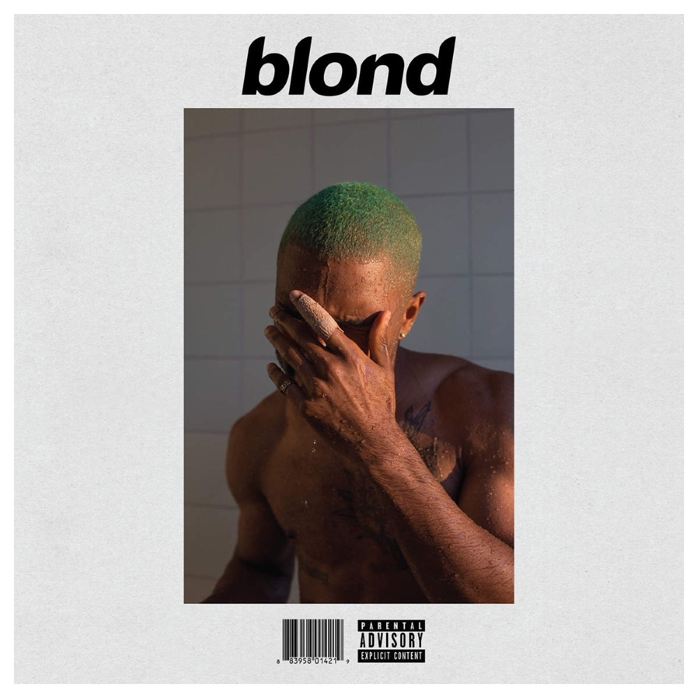

Blonde - Frank Ocean
Created: 2021-04-11 | Modified: 2021-07-18

| 1. Nikes |
| 2. Ivy |
| 3. Pink + White |
| 4. Be Yourself |
| 5. Solo |
| 6. Skyline To |
| 7. Self Control |
| 8. Good Guy |
| 9. Nights |
| 10. Solo (Reprise) |
| 11. Pretty Sweet |
| 12. Facebook Story |
| 13. Close to You |
| 14. White Ferrari |
| 15. Seigfried |
| 16. Godspeed |
| 17. Futura Free |
Frank Ocean's Blonde, a long awaited LP released (finally) on July 2016. Previous to this release, in 2012, he released Channel Orange, something I remember quite fondly. I was quite into his 2012 work upon its release, as was everyone else at the time.
Not only was Channel Orange a commercial hit, but also the highest reviewed album of the year. Despite public reputation, this album did not live up to the hype, and wasn't nearly as good as its numerical predecesor.
Even though I can see the album as a cohesive, conceptual piece, it didn't resonate with me. I enjoyed some of the vocals and instrumentation, but didn't like how loose, minimal, and ambient it came together. It didn't feel dreamy per-say, but moreso boring and ineffectual, losing me many times along the way. All it is, to me, is a collection of okay-to-medium average tracks, mostly devoid of anything I can really connect to or understand on anything but a superficial level.
The high-pitch vocal trash is cringe. It feels like something akin to an Alvin and the Chipmunks album.
Blonde is a conceptual album that I simply missed out on. This means I don't get it, but that I very well could understand it one day, under the right circumstances.
Favorite song: Nights
 2020, 2021 (C) Brody Rethy. All rights reserved.
2020, 2021 (C) Brody Rethy. All rights reserved.